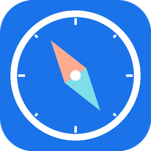
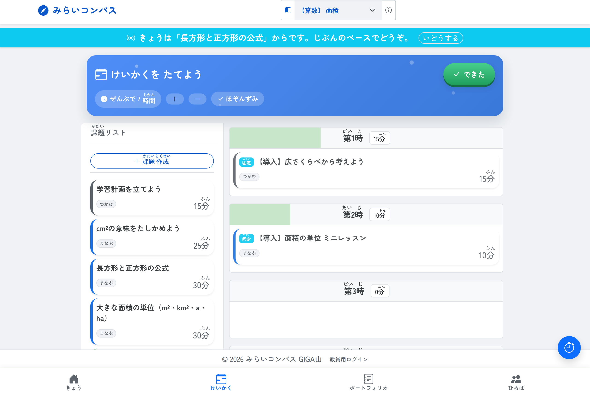
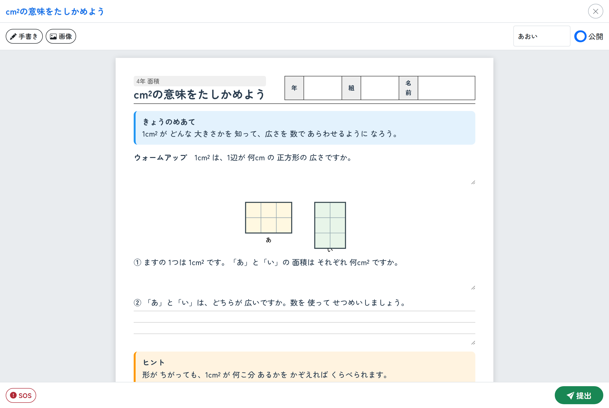
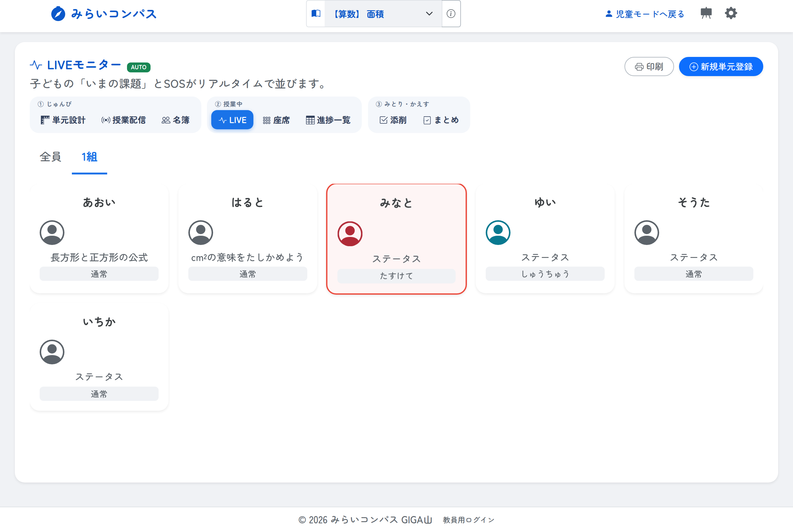
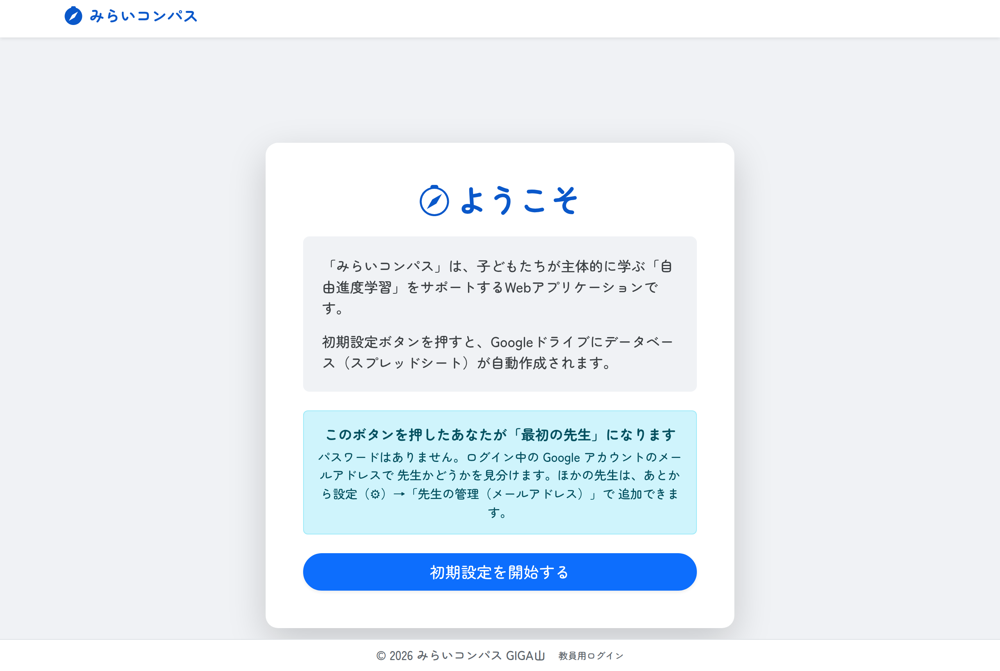

みらいコンパス
子どもが自分で学習の計画を立て、今日の一歩を選び、ふりかえりまで残せる、 自由進度学習のためのアプリです。小学校の教員が作りました。
このページからは、授業を始められません
このアプリは、先生おひとりずつが、ご自分の Google アカウントで公開して使う形です。 学校をまたぐ共通の入口はありません。
- 児童のみなさんは、先生から配られた URL を開いてください。 この端末をアプリにしたいときは、下の「児童の端末に入れる」で先生から聞いた URL を入れます。
- 先生方は、下の「入れかた」の手順で、ご自分のクラスの URL を作ってください。
学習の記録は、公開した先生ご自身の Google ドライブにあるスプレッドシート1つに入ります。 制作者を含め、ほかの誰のところにもデータは行きません。
どんなアプリか
自由進度学習でいちばん重くなるのは、計画表を配って集めて確かめる時間と、 いま誰が止まっているのかを確かめるために教室を歩き回る時間です。 そこを画面に任せると、その時間を「止まっている子の横に座る」ほうへ回せます。



使うときの流れ
- 先生が単元をつくり、名簿を登録し、その日の時数を配信します。
- 子どもが「けいかく」で課題を時間割へ並べます。
- 「きょう」から課題を開いて取り組み、終わったら「できた！」を押します。
- 困ったら「SOS」。先生の画面が赤くなります。
- 授業の終わりに「ふりかえり」を書きます。記録はそのまま一年ぶんたまります。
入れかた
スプレッドシートをコピーして、公開の設定をするだけです。 準備するものは Google アカウント1つ。ふだんお使いの学校のアカウントで構いません。
- 上のボタンを押し、「コピーを作成」を選びます。ご自分のドライブにファイルができます。
- できたファイルを開き、上の「拡張機能」＞「Apps Script」を開きます。
- 右上の「デプロイ」＞「新しいデプロイ」＞種類は「ウェブアプリ」。
実行するユーザーは「自分」、アクセスできるユーザーは「〈学校のドメイン〉内の全員」にします
（
example.ed.jpのように学校のドメイン名が出ている選択肢です）。 - 表示された URL を児童に配ります。設定作業はありません。 デプロイした先生のアカウントが、そのまま担任として登録されます。 シートも見出しもアプリが自動でそろえるので、スプレッドシートを開く必要もありません。 児童が先に開いても、管理者になるのはデプロイした先生です。

「全員」も「全員（匿名ユーザーを含む）」も選ばないでください。 このアプリは、誰が先生で誰がどの児童かを、ログイン中の Google アカウントのメールアドレスで 見分けています。この2つはどちらも学校のドメイン外からアクセスでき、その場合 サーバーがメールアドレスを取れなくなるため、先生の判定も、児童の記録の結びつけも働きません。 選ぶのは学校のドメイン名が書かれている選択肢です。
コードは、コピーしたファイルの中に入っています。 貼り付ける作業はありません。学習の記録もそのファイルの中に入るので、 どこにできたのかを探す必要もありません。
コピーできないときは、貼り付けでも入ります。 学校のポリシーで、外部のファイルのコピーが禁じられていることがあります。 その場合は README の「B. ファイルを貼り付ける」 をご覧ください。Apps Script に 11 個のファイルを貼る手順で、入るものは同じです。
児童の端末に入れる
ブラウザで先生の URL を開いたまま使ってもかまいませんが、この端末に「アプリ」として 入れることもできます。先生から聞いた URL を一度だけ入れると、次からはアイコンから開けます。
/exec で終わる URL です。画面下の「共有」ボタン（□に↑）を押し、 「ホーム画面に追加」を選ぶとアプリとして使えます。
クラス全員に配るときは、この URL の後ろに設定を付けたリンク
https://mirai-compass.giga-school.com/?app=（先生の URL）
を Classroom や QR コードで配ると、子どもは開くだけで設定が終わります。
設定を変えるときは、画面の左上すみを素早く5回タップしてください。
情報担当の先生へ
| フィルタリングで通すもの | アプリ本体が置かれる script.google.com と
googleusercontent.com、このページの github.io です。
生成AIを使う場合だけ Gemini のアドレスも要ります。 |
|---|---|
| 画面を作る部品 | 外から読み込みません。必要なものはすべてアプリの中に持っています。 校内のフィルタリングで配信元が塞がれても画面は出ます。 |
| データの置き場所 | 公開した先生ご自身の Google ドライブにあるスプレッドシート1つだけ。 外部のサービスへは何も送りません。制作者もデータを見られません。 |
| 本人確認 | その端末でログインしている Google アカウントで行います。パスワードはありません。 誰が先生かはメールアドレスの許可リストで決まります。 先生専用の処理は、画面のボタンを隠すのではなくサーバー側で確かめています。 |
| 児童が入れる情報 | 氏名・クラス・出席番号と、学習の記録です。名簿にメールアドレスを入れておくと、 同じ名前の子がいても記録が混ざりません（空欄でも動きます）。 |
| 費用・アカウント登録 | どちらもありません。MIT ライセンスで公開しています。 |
スプレッドシート側の設定は要りません
コピーしたファイルに、あらかじめ用意しておく作業はありません。 シートも見出しも、はじめて開かれたときにアプリが作ります。 名簿も単元も AI のキーも、すべてアプリの画面から設定できます。
いま何が整っていて何が足りないかは、アプリの 設定（⚙）＞「セットアップ状況」で一覧できます。 とくにデプロイの公開設定を取りちがえると、画面に何も出ないまま先生の判定だけが働かなくなるので、 ここで「ログインの確認」が緑になっているかを見てください。
スプレッドシートを直接使ってもかまいません
表計算として扱えることは利点でもあるので、そこは妨げていません。 コピーしたスプレッドシートを開くと、上のメニューに「みらいコンパス」が出ます。 「シートを点検する」で中の作りを確かめられ、足りないシートや見出しは 「足りないシート・見出しを直す」で足せます。
ワークシートと答案は列の番号で読み書きしています。 誤字の修正や行の削除はしていただいて構いませんが、列の並びは変えないでください。 並びがずれているときは、アプリは書き換えずに「何列目がどうずれているか」だけをお知らせします。 中身が付いてくるので、機械では直せないためです。
できないこと
正直に書いておきます。更新はこちらから一斉に配れません。 アプリを直したときは、先生に貼り替えかコピーのやり直しをお願いすることになります。 オフラインでは使えません（画面の外枠だけが残ります）。 学校のドメインの外へ公開することには対応していません（「全員」も「全員（匿名ユーザーを含む）」も使えません）。